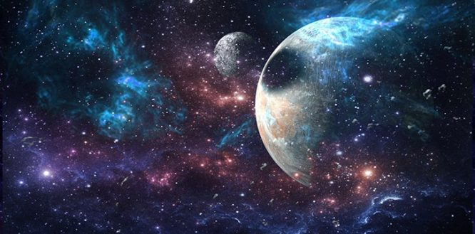
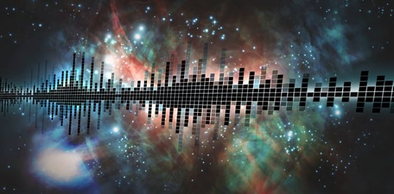

Many will have heard the expression that in space, no one can hear you scream.
Like many others before you, you may have simply accepted this as the truth without thinking much more on the topic.
Some may have even delved further and learned that space is silent because sound cannot travel through a vacuum.
While both of these things are true, have you ever wondered why?
To get to the bottom of this we need to take a closer look at the science behind it all.
So, space is a vacuum, but what does that really mean?
To put it simply, space is everything that you can find outside Earth’s atmosphere.
Despite being filled with stars, planets, asteroids and so on, space is referred to as a vacuum.
A vacuum technically means a space entirely devoid of matter.
Inside a vacuum there is absolutely nothing. No particles, no air, nothing.
So how is space a vacuum, if there are so many cosmic bodies filling the night sky?
Well, it turns out that space isn’t actually a true vacuum. It’s referred to as such for convenience, as space is such a large place that the vast majority of it actually is a vacuum.
So, space is a vacuum, but what does that really mean?
Like light, sound travels in waves. Unlike light waves, however, sound waves are referred to as a mechanical wave.
In the case of sound waves, these mechanical waves come in the form of a vibrating wave that transports energy as it moves from one place to another.
This wave has to travel through what we call a medium, which in this case is through particles.
Let’s look at an example though, to make it a little clearer.
If you play a string of a guitar, the string vibrates. This initial vibration creates a chain reaction in the particles around it, in a way not too dissimilar to the ripples from a pebble dropped into a pond.
Each particle affected then transfers the vibrations onto those around it, transferring energy.
The further the sound wave travels, the weaker the vibration becomes.
This happens until the sound wave ceases to exist, due to a small amount of energy being lost in each transfer between particles.
So, for sound to travel, we need particles. These particles can make up a whole range of things including water, gas, liquids, or even solids.
Sound cannot travel through space though, as it is a vacuum. If you played a guitar in space, you wouldn’t hear it.
There are no particles in the enormous gaps of nothingness between cosmic bodies in space to vibrate, and thus the initial vibrations of the guitar string wouldn’t have anything to transfer to, and no one would ever hear it.
How can space be silent if it’s not a true vacuum?
While the vast majority of space is a vacuum, and thus completely silent, there still are some areas that sound can be heard.
But wait, doesn’t this go against everything I’ve said so far? Well, not quite.
Throughout the universe clouds of dust and gas can be found. These can be the remains of long dead stars, or even regions where matter is being pulled together to form a new one.
In these space-faring clouds it is possible for the gas and dust to become clustered, and thus dense.
What this means is that it’s actually possible for there to be enough particles close enough together for sound to occur, and to even travel a small distance.
An example of where sound in space occurs is within black holes, but unfortunately, it’s humanly impossible to hear.
This sound was first recorded in 2003 at NASA’s Chandra X-ray Observatory, and it came from the Perseus galaxy over 250 million light years away.
The sound was measured to be a B-flat, but at a frequency billions of times lower than is physically possible for humans to hear.
OK so wait, is space completely silent or not? While space is more silent than you could ever imagine, it’s not completely devoid of sound.
Sound waves cannot travel through space, but there are some infinitesimally small regions where sound can exist, under very specific conditions.